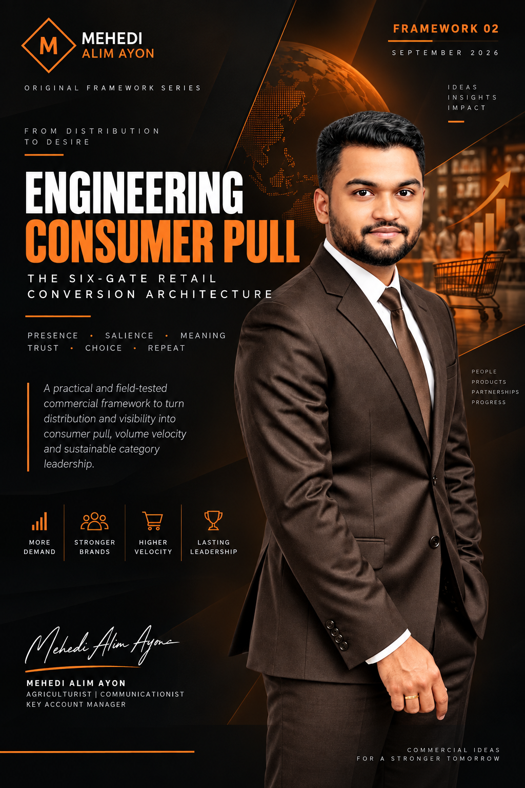

The Six-Gate Retail Conversion Architecture is a practical commercial framework for converting physical availability into consumer choice, repeat purchase and retailer-supported growth without relying on discount intensity as the primary engine.
The framework treats retail conversion as a sequence of behavioral gates. A weak result at any one gate constrains the value created by all the gates before it, so managers should diagnose the earliest weak gate before adding more distribution or discounting.